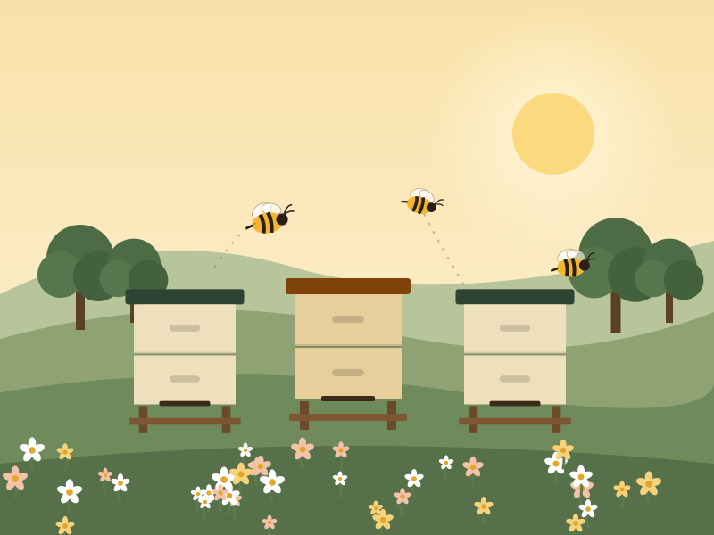
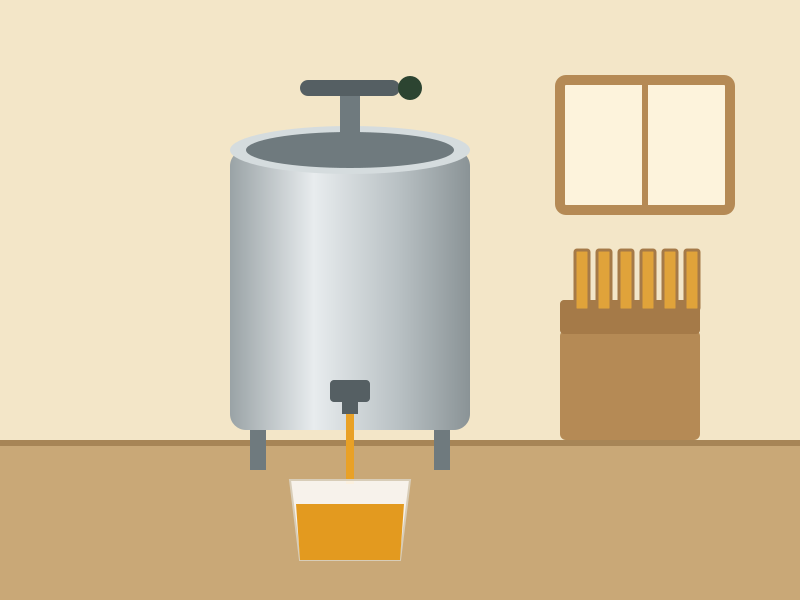

Hive to bottle
Six unhurried steps, zero heat.
Industrial honey is heated to around 60–70 °C so it pours easily and stays clear for years. We skip that. Here's everything that happens between the flower and your spoon.
-
1
 All season
All seasonThe bees forage
Worker bees fly up to three kilometres from the hive, visiting thousands of flowers to collect nectar and pollen. What's in bloom decides the honey's colour and taste.
-
2

Every 7–10 daysWe care for the hives
We check each colony for health, space and a laying queen, and add honey boxes (supers) as the flow builds. Healthy bees make better honey.
-
3
 When it's ready
When it's readyWe wait for capped comb
Bees fan the nectar until it thickens into honey, then seal each cell with wax. We only take frames that are mostly capped — ripe honey that won't ferment.
-
4

Same dayUncap & spin — cold
We slice off the wax caps and place frames in a hand-cranked extractor. Spinning flings the honey out; the empty comb goes back to the bees to refill.
-
5
 2–3 days
2–3 daysStrain once & let it settle
The honey runs through a single cloth strainer to catch wax pieces, then rests in food-grade tanks so air bubbles rise. Pollen stays in.
-
6
 Bottled to order
Bottled to orderHand-bottled & labelled
We fill clean glass jars by hand, seal them and add a batch code so you can trace your jar back to its hive yard and harvest date.
“We don't make the honey. We just try not to ruin what the bees already got right.”— The beekeepers at Madhuvana Raw Honey
What we never do
Raw means raw
- No heating or pasteurisation at any step
- No ultra-filtration that strips out pollen
- No blending with bought-in or imported honey
- No added sugar, syrups, colours or preservatives